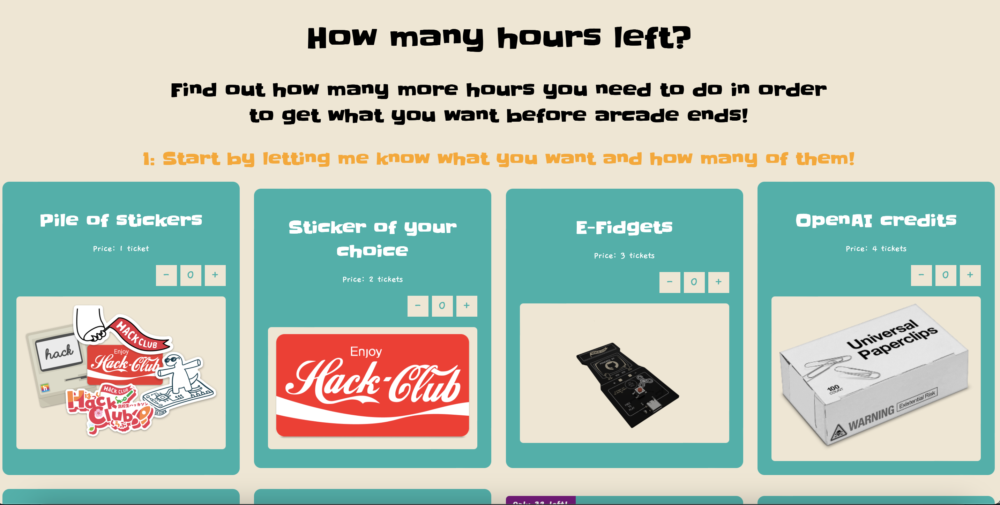
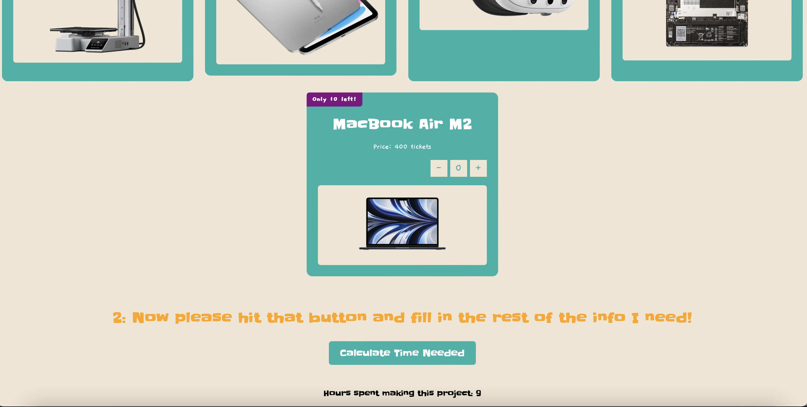

How many hours left?
This project currently is built and live!
This project has been active for
Active on computer? Yes
Active on mobile? Yes
Fun Facts:
- I made this for the Hack Club arcade shop
to work out how many more hours you need to get what you want!
- Down the bottom it says 'Hours spent making this project'
You should check it out!
How to use my How many hours left?
- Start by entering what you want and how many of them!
- Hit the 'Calculate Time Needed' button and fill in the rest of the info
Images:
 